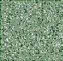

Surveillance of the interaction parameter in the Ising model
Eric Järpe
Communications in Statistics, Theory and Methods, 1999,
Vol. 28, No. 12
Abstract
Surveillance to detect changes of spatial patterns is of
interest in many areas such as environmental control and
regional analysis. Here the interaction parameter of the
ising model, is considered. a minimal sufficient statistic
and its asymptotic distribution are used. It is demonstrated
that the convergence to normal distribution is rapid.
the main result is that when the lattice is large, all
approximations are better in several respects. It is shown
that, for large lattice sizes, earlier results on surveillance
can be used in cases of most interest. The expected delay
of alarm at a fixed level of false alarm probability is
examined for some examples.
Get a gzipped postscript copy of the paper
here! (18 pages, 54 kb)
An attraction MRF
|
No interaction
|
A repulsion MRF

|